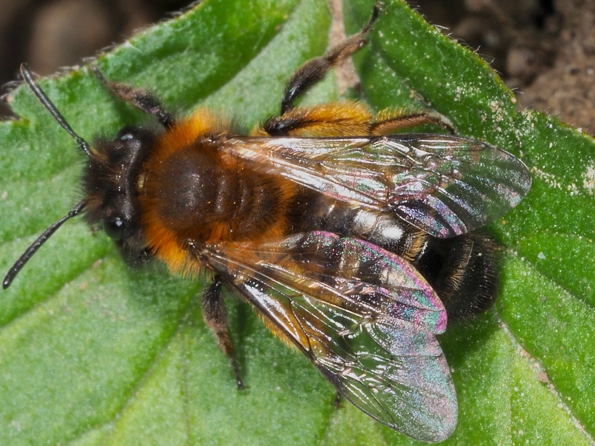
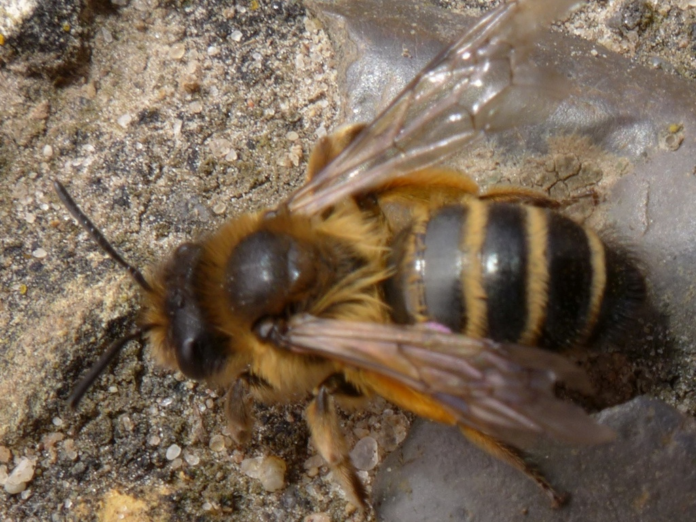
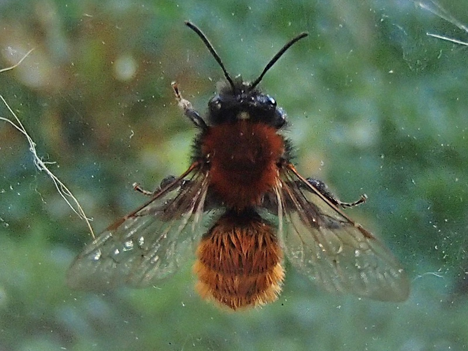
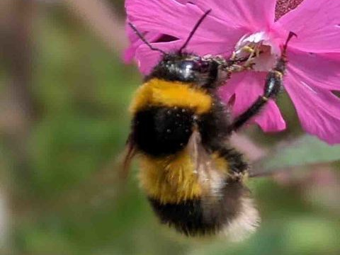
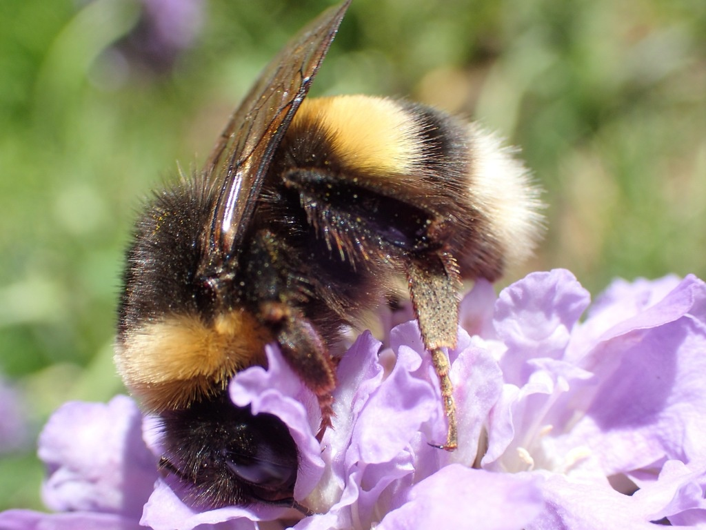
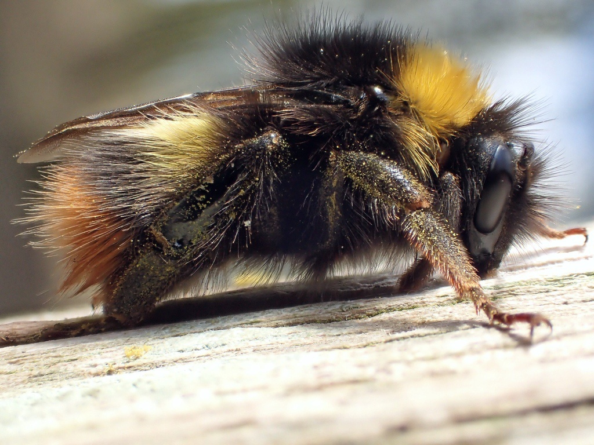

<!DOCTYPE html>
<html>
  <head>
    <title>beexplainable Experiment</title>
    <script src="jspsych/jspsych.js"></script>
    <script src="jspsych/plugin-html-keyboard-response.js"></script>
    <script src="jspsych/plugin-image-button-response.js"></script>
    <script src="jspsych/plugin-html-button-response.js"></script>
    <script src="jspsych/plugin-preload.js"></script>
    <link href="jspsych/jspsych.css" rel="stylesheet" type="text/css" />
    <link rel="icon" href="img/bht_logo.jpg">
	<meta name="viewport" content="width=device-width, initial-scale=1">
	
	<style>
        #div_row {
          width: 66%;
          float: right;
        }

        #just_protos_prompt_div {
          width: 33%;
          float: left;
        }

		.row {
		  display: flex;
		  flex-wrap: wrap;
		  padding: 0 4px;
		}

		.column {
		  flex: 33%;
          float: left;
		  width: 25%;
		  margin-bottom: 16px;
		  padding: 0 8px;
		}

		.column img {
		  margin-top: 8px;
		  vertical-align: middle;
          width: 90%;
          height:auto;
		}

        .column h5 {
            margin-block-start: 0.5em;
        }
		
		html {
		  box-sizing: border-box;
		}

		*, *:before, *:after {
		  box-sizing: inherit;
		}

		@media screen and (max-width: 650px) {
		  .column {
			width: 100%;
			display: block;
		  }
		}

		.card {
		  box-shadow: 0 4px 8px 0 rgba(0, 0, 0, 0.2);
          width: 90%;
		}

		.container {
		  padding: 0 16px;
		}

		.container::after, .row::after {
		  content: "";
		  clear: both;
		  display: table;
		}

		.button {
		  border: none;
		  outline: 0;
		  display: inline-block;
		  padding: 8px;
		  color: white;
		  background-color: #000;
		  text-align: center;
		  width: 100%;
          cursor: pointer;
		}

		.button:hover {
		  background-color: red;
		}
	</style>
  </head>
  <body></body>
  <script>

    // Initialize jsPsych
    var jsPsych = initJsPsych({
      show_progress_bar: true
    });

    // Create timeline
    var timeline = [];
	const protos = ["img/Andrena_bicolor_proto.jpg", "img/Andrena_flavipes_proto.jpg", "img/Andrena_fulva_proto.jpg",
					"img/Bombus_hortorum_proto.jpg", "img/Bombus_lucorum_proto.jpg", "img/Bombus_pratorum_proto.jpg"];
	const test_samples = ["img/nopred_0.jpg", "img/nopred_1.jpg"];
    const pred_samples = ["img/pred_0.jpg", "img/pred_1.jpg"];
	const exps = ["img/rise_0.jpg", "img/rise_1.jpg"];
	const preds = ["Bombus lucorum", "Andrena fulva"];
    const classes = ["Andrena bicolor", "Andrena flavipes", "Andrena fulva", "Bombus hortorum", "Bombus lucorum", "Bombus pratorum"];

    // Grid with protos (just labels beneath, no buttons)
	var proto_grid = `
        <div id="div_row">
            <div class="row">
                <div class="column">
                    <div class="card">
                        
                        <h5>Andrena bicolor</h5>
                    </div>
                </div>

                <div class="column">
                    <div class="card">
                        
                        <h5>Andrena flavipes</h5>
                    </div>
                </div>

                <div class="column">
                    <div class="card">
                        
                        <h5>Andrena fulva</h5>
                    </div>
                </div>

            </div>

            <div class="row">
                <div class="column">
                    <div class="card">
                        
                        <h5>Bombus hortorum</h5>
                    </div>
                </div>

                <div class="column">
                    <div class="card">
                        
                        <h5>Bombus lucorum</h5>
                    </div>
                </div>

                <div class="column">
                    <div class="card">
                        
                        <h5>Bombus pratorum</h5>
                    </div>
                </div>
            </div>
		</div>
		`;


    // Preload images
    var preload = {
      type: jsPsychPreload,
      images: [protos, test_samples, pred_samples, exps]
    };
    timeline.push(preload);

    // Define welcome message trial
    var welcome = {
      type: jsPsychHtmlButtonResponse,
      stimulus: "<strong>Welcome to the experiment!</strong>",
      choices: ['Continue']
    };
    timeline.push(welcome);

    // Define instructions trial
    var instructions = {
      type: jsPsychHtmlButtonResponse,
      stimulus: `	  
        <p>In this experiment, you will be shown images of 6 
		wild bee species and be asked to solve 3 tasks.</p><p><strong>Task 1</strong>: Assign a class to the
		test image based on the prototypes shown on the right half of the page.</p>
        <p><strong>Task 2</strong>: Assign a class while also knowing what prediction
		our model has made.</p><p><strong>Task 3</strong>: Assign a class while knowing
		the model prediction and seeing an explanation for it.</p>
      `,
      choices: ['Continue']
    };
    timeline.push(instructions);
	
	// Show user prototypes for the first time before starting tasks
    var just_protos = {
      type: jsPsychHtmlButtonResponse,
      stimulus:
        proto_grid +
        `<div id="just_protos_prompt_div"><p>Before starting the experiment, take your time and look at the 6 samples on the right.
		Each of them was chosen as a prototype of their class. Throughout the whole experiment
		you will be shown these representative samples next to the test samples to help you
		decide which class the test sample belongs to.</p>
		<p>Whenever you are ready, click <strong>Continue</strong> to start the first task:</p>
		<p><strong>Task 1: Assign a class to the
		test image based on the prototypes.</strong></p></div>`,
      choices: ['Continue'],
      post_trial_gap: 1000
    };
    timeline.push(just_protos);

    // TODO: why doesn't a for loop work here?!
    // Define trial stimuli array for timeline variables
    var test_stimuli = [
	  { stimulus: test_samples[0],  correct_response: preds[0]},
      { stimulus: test_samples[1],  correct_response: preds[1]}
    ];

    var pred_stimuli = [
	  { stimulus: pred_samples[0],  correct_response: preds[0]},
      { stimulus: pred_samples[1],  correct_response: preds[1]}
    ];
	
	var exp_stimuli = [
	  { stimulus: exps[0],  correct_response: preds[0]},
      { stimulus: exps[1],  correct_response: preds[1]}
    ];

    // Define fixation
    var fixation = {
      type: jsPsychHtmlKeyboardResponse,
      stimulus: '<div style="font-size:60px;">+</div>',
      choices: "NO_KEYS",
      trial_duration: function(){
        return jsPsych.randomization.sampleWithoutReplacement([250, 500, 750], 1)[0]; // = how long to wait till next test sample is shown
      },
      data: {
        task: 'fixation'
      }
    };

	/*** WITHOUT MODEL ***/

    var test_no_model = {
      type: jsPsychImageButtonResponse,
      stimulus: jsPsych.timelineVariable('stimulus'),
      choices: classes, // Also the button labels
      data: {
        task: 'response',
        correct_response: jsPsych.timelineVariable('correct_response')
      },
      on_finish: function(data){
        // Note: Class indices are compared, not labels
        data.correct = jsPsych.pluginAPI.compareKeys(classes[data.response], data.correct_response);
      }
    };

    var test_procedure_no_model = {
      timeline: [fixation, test_no_model],
      timeline_variables: test_stimuli,
      repetitions: 1,
      randomize_order: true
    };
    timeline.push(test_procedure_no_model);

    var debrief_block_no_model = {
      type: jsPsychHtmlButtonResponse,
      stimulus: function() {

        var trials = jsPsych.data.get().filter({task: 'response'});
        var correct_trials = trials.filter({correct: true});
        var accuracy = Math.round(correct_trials.count() / trials.count() * 100);
        var rt = Math.round(trials.select('rt').mean());

        return `<p>Num. trials: ${trials.count()}, out of which ${correct_trials.count()} were correct.</p>
		  <p>You responded correctly on ${accuracy}% of the trials.</p>
          <p>Your average response time was ${rt}ms.</p>
          <p>Click <strong>Continue</strong> to start the next task:</p>
          <p><strong>Task 2: Assign a class while also knowing what prediction our model has made.</strong></p>`;
      },
      choices: ['Continue']
    };
    timeline.push(debrief_block_no_model);
	
	/*** WITH MODEL ***/
	
	var test_with_model = {
      type: jsPsychImageButtonResponse,
      stimulus: jsPsych.timelineVariable('stimulus'),
      choices: classes,
      data: {
        task: 'response_model',
        correct_response: jsPsych.timelineVariable('correct_response')
      },
      on_finish: function(data){
        data.correct = jsPsych.pluginAPI.compareKeys(classes[data.response], data.correct_response);
      }
    };
	
	var test_procedure_with_model = {
      timeline: [fixation, test_with_model],
      timeline_variables: pred_stimuli,
      repetitions: 1,
      randomize_order: true
    };
    timeline.push(test_procedure_with_model);
	
	var debrief_block_with_model = {
      type: jsPsychHtmlButtonResponse,
      stimulus: function() {

        var trials = jsPsych.data.get().filter({task: 'response_model'});
        var correct_trials = trials.filter({correct: true});
        var accuracy = Math.round(correct_trials.count() / trials.count() * 100);
        var rt = Math.round(trials.select('rt').mean());

        return `<p>Num. trials: ${trials.count()}, out of which ${correct_trials.count()} were correct.</p>
		  <p>You responded correctly on ${accuracy}% of the trials.</p>
          <p>Your average response time was ${rt}ms.</p>
          <p>Click <strong>Continue</strong> to start the next task:</p>
          <p><strong>Task 3: Assign a class while knowing the model prediction and seeing an explanation for it.</strong></p>`;
      },
      choices: ['Continue']
    };
    timeline.push(debrief_block_with_model);
	
	
	/*** WITH EXPLANATIONS ***/
	
	var test_with_exp = {
      type: jsPsychImageButtonResponse,
      stimulus: jsPsych.timelineVariable('stimulus'),
      choices: classes,
      data: {
        task: 'response_exp',
        correct_response: jsPsych.timelineVariable('correct_response')
      },
      on_finish: function(data){
        data.correct = jsPsych.pluginAPI.compareKeys(classes[data.response], data.correct_response);
      }
    };
	
	var test_procedure_with_exp = {
      timeline: [fixation, test_with_exp],
      timeline_variables: exp_stimuli,
      repetitions: 1,
      randomize_order: true
    };
    timeline.push(test_procedure_with_exp);
	
	var debrief_block_with_exp = {
      type: jsPsychHtmlButtonResponse,
      stimulus: function() {

        var trials = jsPsych.data.get().filter({task: 'response_exp'});
        var correct_trials = trials.filter({correct: true});
        var accuracy = Math.round(correct_trials.count() / trials.count() * 100);
        var rt = Math.round(trials.select('rt').mean());

        return `<p>Num. trials: ${trials.count()}, out of which ${correct_trials.count()} were correct.</p>
		  <p>You responded correctly on ${accuracy}% of the trials.</p>
          <p>Your average response time was ${rt}ms.</p>
          <p>Click <strong>Finish</strong> to close the experiment. Thank you!</p>`;
      },
      choices: ['Finish']
    };
    timeline.push(debrief_block_with_exp);

    // Start the experiment
    jsPsych.run(timeline);

  </script>
</html>